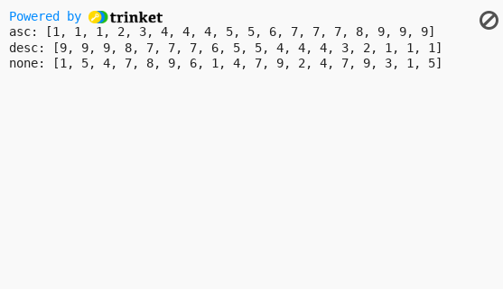
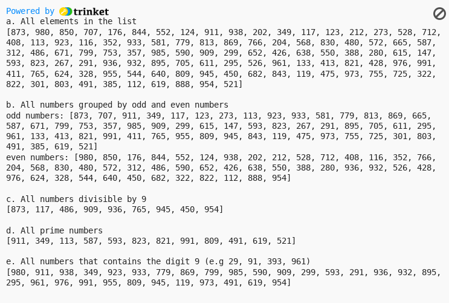

Level 1: (4 points each)
1. Differentiate between SIMD and MIMD? Explain.
— The difference between SIMD and MIMD is that SIMD processes the same single instruction but operates on different data. An example would be reverting an RGB picture to its negative equivalent. The single instruction is to revert every color to its negative equivalent, and the multiple data are the RGB colors. While for MIMD, multiple instructions are processed by multiple processing units. One instruction is divided into smaller instructions which are processed in a parallel manner. An example would be a server handling multiple data from multiple requests. The multiple instructions are the requests from multiple users, which can be add, update, or delete. And often these instructions affect multiple data.
2. What are the performance metrics of parallel systems? Explain each.
Execution Time - amount of time it takes to start and finish a problem Total Parallel Overhead - total time of sequential vs parallel processing Speedup - the ratio of time in solving a problem on sequential vs parallel processing Efficiency - amount of resources used to achieve a certain performance Cost - amount processors used to solve a problem
Level 2: (5 points each)
1. How does parallel programming/computing works? What do you think will be the advantage of utilizing parallel approach?
— Parallel computing works by leveraging multiple CPUs to process multiple instructions. The advantage would be faster performance and lesser time. A real life application of parallel computing would be creating climate models. Multiple factors such as the data of land, air, ice, and water interact with each other, where parallel computing can analyze and each data points individually to provide faster processing of the model.
2. In a right triangle, the square of the length of one side is equal to the sum of the squares of the lengths of the other two sides. Write a program that prompts the user to enter the length of the three sides of a triangle and then outputs a message indicating whether the triangle is a right triangle.
Output:
3. Write a program that prompts the user to input a number between 0 and 35. If the number is less than or equal to 9, the program should output the number; otherwise, it should output A for 10, B for 11, C for 12… and Z for 35.
Output:
4. Write a program that will display all numbers divisible by 3, 4 and 5 from 1-50.
Output:
Level 3: (6 points each, +2 points if you get 2 LEVEL 3 questions correct.)
2. Explain the difference between Serial Computing and Parallel Computing.
— Serial computing works by processing multiple instructions in a serial manner, one by one. The opposite would be Parallel Computing where multiple instructions are processed simultaneously. Multiple instructions are processed by multiple processing units. One instruction is divided into smaller instructions which are processed in a parallel manner.
3. Create a function in Python that accepts two parameters. The first will be a list of numbers. The second parameter will be a string that can be one of the following values: asc, desc, and none. If the second parameter is "asc," then the function should return a list with the numbers in ascending order. If it's "desc," then the list should be in descending order, and if it's "none," it should return the original list unaltered.
Output:
Level 4: (10 points each)
1. Write a program that will generate 100 3-digit random numbers and store it in a list. The program should display the following:
a. All elements in the list b. All numbers grouped by odd and even numbers c. All numbers divisible by 9. d. All prime numbers e. All numbers that contains the digit 9 (e.g 29, 91, 393, 961)
Output:
2. Given a linked list of size K, your task is to complete the function sum_of_lastN_nodes(), which should return the sum of last N nodes of the linked list. The function takes two arguments as input, the reference pointer of the head of the linked list and the integer N. Example: 5->10->6->4->1->12 N=3 sum_of_lastN_nodes(6, N) Output: Sum of last three nodes in the linked list is 4 + 1 + 12 = 15.
Output: